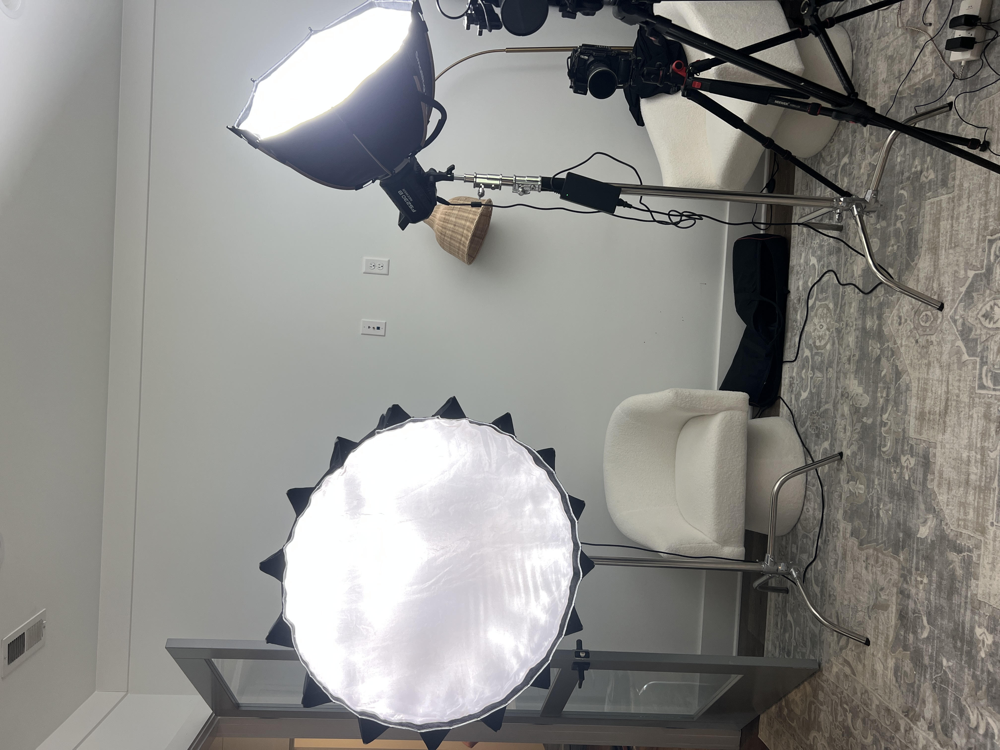
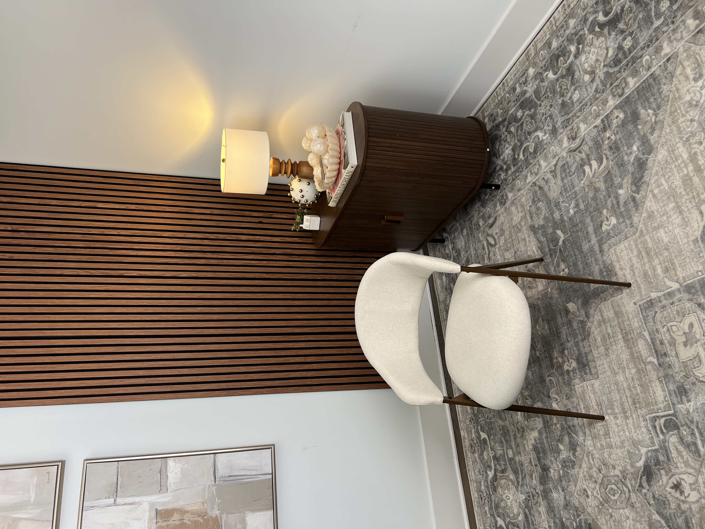
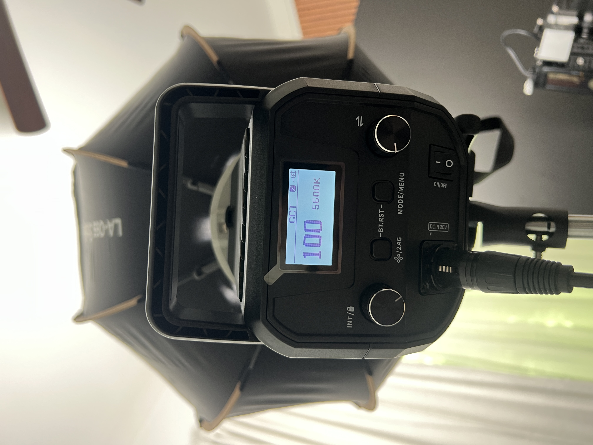
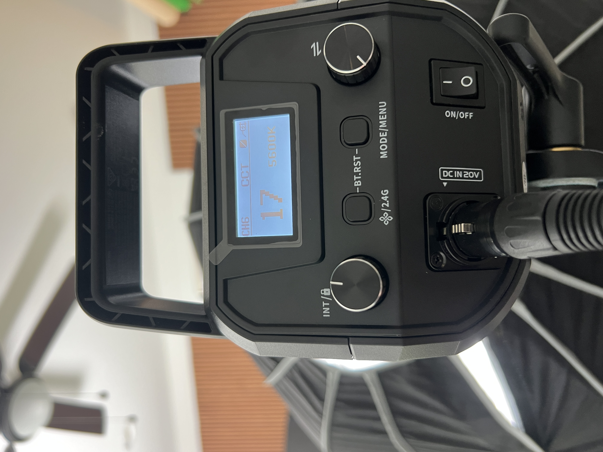
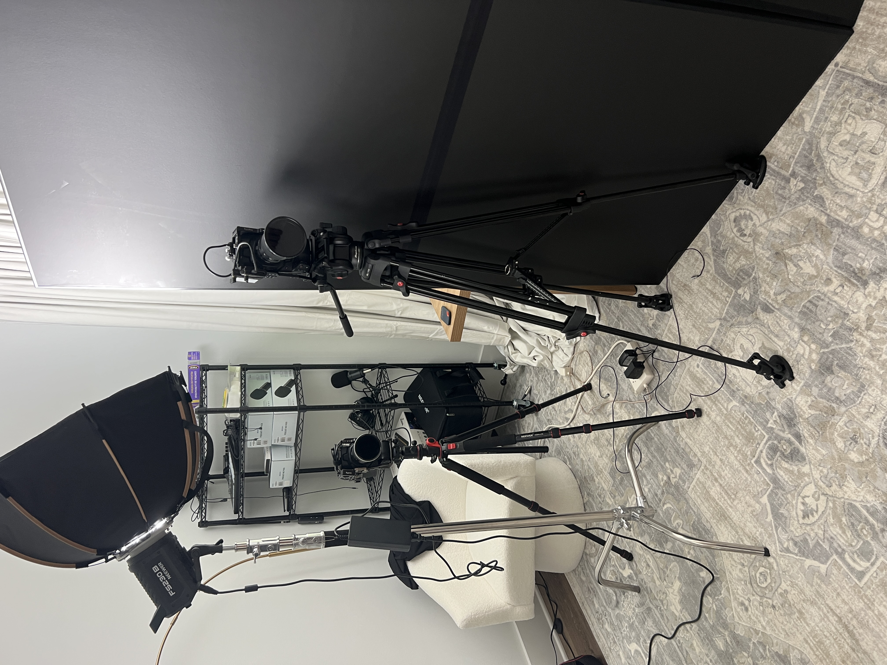
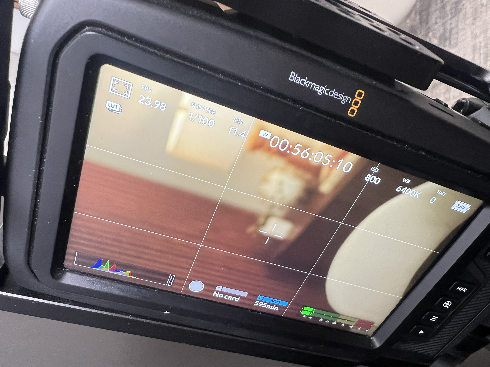

RECO Content Room
Lighting setup, camera positions, and settings — so the next shoot matches the last one.
Pro tip: For a better voice, tap "select all" above then use iOS Speak Selection (Settings > Accessibility > Spoken Content > Speak Selection).
Overview
This is a two-camera interview setup in the RECO content room. Talent sits in the white boucle chair against the wood-slat accent wall. Wide cam is dead-on at 35mm. Side angle is camera-right at 50mm. Key light is the larger lightdome (mine) low and close on camera-left; fill/rim is the studio's octagonal lightdome boomed in from above-behind.

The Set
Talent faces camera, seated in the white boucle chair. Background is the vertical wood-slat accent wall with the dark wood credenza tucked in camera-right. A warm practical lamp on the credenza adds depth and a color contrast against the cool key. Framed tile-print art lives camera-left of the chair, just outside the wide frame.

Set checklist
- White boucle chair centered on the wood-slat wall
- Credenza camera-right, lamp ON (warm tungsten practical)
- Gray patterned area rug under and forward of the chair
- Framed tile-print art camera-left (out of wide frame)
- Small decor items on credenza top (figurine, books)
Lighting
Two-light setup. Both LEDs run daylight-balanced at 5600K — the warm practical lamp on the credenza supplies the orange contrast. Don't change the lamp.
Key — my lightdome (camera-left, low)
The large parabolic-style lightdome (the one I bring from home) is the key. Placed low — roughly at chair-arm height — camera-left, angled up into talent's face. Soft, large source, wraps cleanly across the cheekbone. Front diffusion is on.
- Color temp5600K (CCT)
- Intensity100
- ModifierMatt's parabolic lightdome + front diffusion
- PositionCamera-left, low, chair-arm height

Fill/rim — studio's lightdome (boomed, above-behind)
The octagonal lightdome that lives at the studio. Boomed in from above and slightly behind talent (camera-right side) on a C-stand with arm + sandbag counterweight. Acts as a soft top-rim — pulls talent off the wood-slat wall and gives some highlight to hair and shoulder.
- Color temp5600K (CCT)
- Intensity17
- ModifierStudio's octagonal lightdome
- PositionBoomed from above, slightly camera-right and behind

Cameras
Two Blackmagic Pocket Cinema Camera 4Ks. Both running the same exposure and color settings so they cut together cleanly.
A-Cam — wide (35mm Sigma)
- BodyBlackmagic Pocket 4K
- LensSigma 35mm
- FilterND on lens
- PositionDead-on, centered on chair
B-Cam — side angle (50mm Sigma)
- BodyBlackmagic Pocket 4K
- LensSigma 50mm
- FilterNone
- PositionCamera-right, ~30–45° off axis

Camera Settings (both bodies)
Match these on both cameras. Confirmed off the BMPCC 4K LCD on the wide cam:
- Frame rate23.98 fps
- Shutter1/100
- Irisf/1.4
- ISO800
- White balance6400K
- Tint0
- LUTON (monitor LUT loaded)

Quick Setup Checklist
- Chair centered on wood-slat wall, credenza camera-right with lamp ON
- Key (my dome) camera-left, low, ~chair-arm height — 5600K, intensity 100
- Fill/rim (studio's dome) boomed from above-behind camera-right — 5600K, intensity 17
- A-Cam: BMPCC 4K + Sigma 35mm + ND, dead-on
- B-Cam: BMPCC 4K + Sigma 50mm, camera-right ~30–45°
- Both cams: 23.98 fps, 1/100, f/1.4, ISO 800, WB 6400K, tint 0, LUT on
- Negative fill / V-flag on the opposite side if shadow side needs deepening
- Sandbag every C-stand with a boom arm. No exceptions.